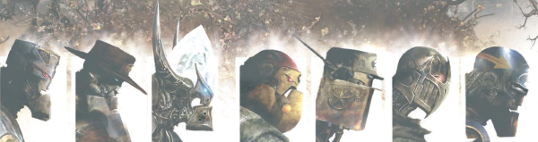

Seven military-grade robots deliver justice for those who can't defend themselves from the predations of corporate fascism.
As part of the complex Millsverse, the original series was a spin-off from Ro-Busters and first resurfaced as a crossover with Nemesis the Warlock. Prototype versions of the Warriors show up in Savage, which also has strong crossover links with Ro-Busters. Millsverse cross-pollination is not necessarily linear!
Who makes up the seven is often in flux, with a variety of line-ups over the years as some are killed off, some resurrected - and loyalty is never guaranteed.
Spread the word!
Art by Clint Langley
| Story Title | Parts | Pages | w indicates a wraparound coverCovers | Year(s) | Issues | Writer | Artist | Colourist | Letterer |
|---|---|---|---|---|---|---|---|---|---|
| [The Meknificent Seven] | |||||||||
| The A.B.C. Warriors | 1 | 7 | 0 | 1979 | 119 | Pat Mills | Kevin O'Neill | <-- 2pp, [b&w] | Peter Knight |
| The Retreat from Volgow | 1 | 6 | 0 | 1979 | 120 | Pat Mills | Brendan McCarthy | <-- 2pp, [b&w] | Peter Knight |
| [Mongrol] | 2 | 12 | 0 | 1979 | 121-122 | Pat Mills | Mike McMahon | <-- 4pp, [b&w] | Peter Knight |
| [The Order of Knights Martial] | 2 | 12 | 0 | 1979 | 123-124 | Pat Mills | 1: Kevin O'Neill 2: Brett Ewins various | <-- 4pp, [b&w] | Peter Knight |
| The Bougainville Massacre | 2 | 12 | 125: Mike McMahon 1 | 1979 | 125-126 | Pat Mills | Mike McMahon | <-- 4pp, [b&w] | Peter Knight |
| [Steelhorn] | 2 | 12 | 0 | 1979 | 127-128 | Pat Mills | Brendan McCarthy | <-- 4pp, [b&w] | Peter Knight |
| Mars, the Devil Planet | 1 | 6 | 0 | 1979 | 129 | Pat Mills | Mike McMahon | <-- 2pp, [b&w] | Tom Frame |
| [Cyboons] | 2 | 12 | 130: Mike McMahon 1 | 1979 | 130-131 | Pat Mills | Dave Gibbons | <-- 4pp, [b&w] | Dave Gibbons |
| [The Red Death] | 2 | 12 | 132: Mike McMahon 1 | 1979 | 132-133 | Pat Mills | Mike McMahon | <-- 4pp, [b&w] | Peter Knight |
| [Golgotha] | 3 | 19 | 135: Carlos Ezquerra 1 | 1979 | 134-136 | Pat Mills | Carlos Ezquerra | <-- 6pp, [b&w] | Peter Knight |
| [Mad George] | 3 | 18 | 138: Mike McMahon 1 | 1979 | 137-139 | Pat Mills | Mike McMahon | <-- 6pp, [b&w] | Peter Knight |
| Red Planet Blues | 1 | 7 | 0 | 1984 | Reprints: B2KSE22KA'85 | Alan Moore | Steve Dillon, John Higgins | <-- | Steve Potter |
From Nemesis the WarlockBook IV: The Gothic Empire | 20 | 94 | 387: Kevin O'Neill 395: Bryan Talbot 399: Bryan Talbot 404: Bryan Talbot 4 | 1984-1985 | 387-406 | Pat Mills | Kevin O'Neill: 1‑2 Bryan Talbot: 3‑20 various | [b&w] | Steve Potter |
From Nemesis the WarlockBook V: The Vengeance Of Thoth | 11 | 63 | 438: Bryan Talbot 1 | 1985 | 435-445 | Pat Mills | Bryan Talbot | [b&w] | Steve Potter |
A choose‑your‑own adventure comic. Full title: You Are the ABC Warrior vs. Volgo The Ultimate Death Machine Volgo The Ultimate Death Machine | 1 | 11 | 0 | 1986 | DM2 | Pat Mills | Steve Dillon | [b&w] | Gordon Robson |
From Nemesis the WarlockBook VI: Torquemurder | 11 | 59 | 482: Bryan Talbot 487: Bryan Talbot 504: Bryan Talbot 3 | 1986-1987 | 482-487, 500-504 | Pat Mills | Bryan Talbot | 1‑6: pp1‑2 color centers, [b&w] 7‑11: [b&w] various | Steve Potter: 1‑6 Gordon Robson: 7‑11 various |
| [The Black Hole] or [The End of Time!] | 21 | 132 | 556: Simon Bisley 563: Liam McCormack‑Sharp 573: Liam McCormack‑Sharp 577: Simon Bisley 581: Simon Bisley 5 | 1988 | 555-566, 573-581 | Pat Mills | Simon Bisley: 1‑4, 9‑12, 17‑21 SMS: 5‑8, 13‑16 various | [b&w] | Jack Potter |
Supertitled "A.B.C. Warriors"Khronicles Of Khaos [Book I] | 8 | 48 | 750: Kevin Walker 757: Kevin Walker 2 | 1991 | 750-757 | Pat Mills, Tony Skinner | Kevin Walker | <-- | Steve Potter |
Supertitled "A.B.C. Warriors"Khronicles Of Khaos, Book II | 9 | 51 | 781: Kevin Walker 787: Kevin Walker 2 | 1992 | 780-784, 787-790 | Pat Mills, Tony Skinner | Kevin Walker | <-- | Steve Potter |
From BlackbloodDishonourable Discharge | 1 | 8 | 0 | 1992 | Reprints: http://content.2000adonline.com/FCBD2017/Blackblood.pdf WS4 | Pat Mills | Kevin Walker | <-- | Annie Parkhouse |
Supertitled "A.B.C. Warriors"Hellbringer | 8 | 48 | 906: Dermot Power 1 | 1994 | 904-911 | Pat Mills, Tony Skinner | Kevin Walker | <-- | Ellie De Ville |
From Judge DreddHammerstein | 4 | 24 | 960: Jason Brashill 1 | 1995 | 960-963 | Pat Mills, Tony Skinner | Jason Brashill | <-- | Tom Frame |
Supertitled "A.B.C. Warriors"Hellbringer II | 8 | 48 | 965: Kevin Walker 971: Kevin Walker 2 | 1995 | 964-971 | Pat Mills, Tony Skinner | Kevin Walker | <-- | Ellie De Ville |
From Joe PineapplesHis Greatest Hits | 1 | 8 | 0 | 1996 | SFS19 | Pat Mills | Tom Carney | <-- | Ellie De Ville |
| Roadkill | 1 | 6 | 0 | 1999 | p2000 | Pat Mills | Kevin Walker | [b&w] | Ellie De Ville |
| [The Third Element] | |||||||||
Supertitled "A.B.C. Warriors"The Third Element | 3 | 24 | 0 | 2001 | 1234-1236 | Pat Mills | Henry Flint | [greyscale] | Tom Frame |
Supertitled "A.B.C. Warriors"The Clone Cowboys | 3 | 18 | 0 | 2001 | 1237-1239 | Pat Mills | Liam McCormack-Sharp | [b&w] | Tom Frame |
Supertitled "A.B.C. Warriors"The Tripods | 3 | 18 | 1240: Henry Flint & Junior Tomlin 1 | 2001 | 1240-1242 | Pat Mills | Mike McMahon | [b&w] | Tom Frame |
Supertitled "A.B.C. Warriors"The Zero Option | 3 | 18 | 0 | 2001 | 1243-1245 | Pat Mills | Boo Cook | [b&w] | Tom Frame |
Supertitled "A.B.C. Warriors"Assault On The Red House | 3 | 18 | 1248: Kevin Walker 1 | 2001 | 1246-1248 | Pat Mills | Henry Flint | [greyscale] | Tom Frame |
| The Shadow Warriors | |||||||||
Supertitled "A.B.C. Warriors"Book One | 6 | 44 | 1337: Greg Staples 1 | 2003 | 1336-1341 | Pat Mills | Carlos Ezquerra | [b&w] | Tom Frame |
Supertitled "A.B.C. Warriors"Book Two | 6 | 44 | 1401: Henry Flint 1405: Henry Flint 2 | 2004 | 1400-1405 | Pat Mills | Henry Flint | [greyscale] | Tom Frame |
Supertitled "A.B.C. Warriors"Book Three | 10 | 60 | 1476 [V1]: Henry Flint 1476 [V2]: Henry Flint 1483: Henry Flint3 | 2006 | 1476-1485 | Pat Mills | Henry Flint | [greyscale] | Ellie De Ville |
| The Volgan War | |||||||||
| Volume 1 | 9 | 62 | 1519: Clint Langley 1522: Clint Langley 1524: Clint Langley 3 | 2006-2007 | Reprints: FCBD6‑QR (partial: ep.1)p2007, 1518-1525 | Pat Mills | Clint Langley | <-- | Simon Bowland |
| Volume 2 | 10 | 64 | 1551: Clint Langley 1555: Clint Langley 1559: Clint Langley 3 | 2007 | 1550-1559 | Pat Mills | Clint Langley | <-- | Simon Bowland |
| Volume 3 | 11 | 72 | 1603: Clint Langley 1606: Clint Langley 1611 [w]: Clint Langley 1616: Clint Langley3,1w | 2008 | 1601-1606, 1611-1616 | Pat Mills | Clint Langley | <-- | Simon Bowland |
| Volume 4 | 12 | 72 | 1667: Clint Langley 1670 [w]: Clint Langley 1674 [w]: Clint Langley 1677 [w]: Clint Langley 1,3w | 2010 | 1666-1677 | Pat Mills | Clint Langley | <-- | Simon Bowland |
| Return to Earth | 11 | 74 | 1801: Clint Langley [w] 1803: Clint Langley 1807: Clint Langley 1810: Clint Langley 3,1w | 2012 | 1800-1811 | Pat Mills | Clint Langley | <-- | Annie Parkhouse |
| Return to Mars | 12 | 76 | 1864: Clint Langley 1868: Clint Langley 1873: Clint Langley 3 | 2013-2014 | p2014, 1862-1866, 1868-1873 | Pat Mills | Clint Langley | <-- | Annie Parkhouse |
Linked to Ro‑BustersReturn to Ro-Busters | 12 | 82 | 1962: Clint Langley 1964: Clint Langley 1968: Clint Langley 1972: Clint Langley 4 | 2015-2016 | 1961-1972 | Pat Mills | Clint Langley | <-- | Annie Parkhouse |
No supertitle[Jubilee], part 3 | 1 | 1 | 0 | 2017 | 2K40 | T.M.O. | Mark Sexton | [b&w] | Simon Bowland |
| Seeing Red | 1 | 6 | 0 | 2017 | 2K40 | Pat Mills | Clint Langley | [spot color] | Ellie De Ville |
From BlackbloodGeneral Public | 1 | 6 | 0 | 2017 | FCBD7 | Pat Mills | Kei Zama | [spot color] | Sam Gretton |
| Fallout | 12 | 86 | 2062: Clint Langley 2069: Clint Langley 2072: Clint Langley 3 | 2017-2018 | 2061-2072 | Pat Mills | Clint Langley | <-- | Annie Parkhouse |
| >> Text Stories << | |||||||||
| Story Title | Parts | Pages | w indicates a wraparound coverCovers | Year(s) | Issues | Writer | Artist | Colourist | Letterer |
| The Retreat From Volgow | 1 | 4 | 0 | 1980 | 2KA'81 | Pat Mills | Brendan McCarthy | [two-tone] | n/a |
| >> Posters / Teasers << | |||||||||
| Title | Parts | Pages | w indicates a wraparound coverCovers | Year(s) | Issues | Writer | Artist | Colourist | Letterer |
| Six of the Best | ~ | 1 | 0 | 1985 | 410 | n/a | Bryan Talbot | <-- | n/a |
From Joe PineapplesJoe Pineapples: Star Scan | ~ | 1 | 0 | 1987 | 535 | n/a | Simon Harrison | <-- | n/a |
Full title: "A is for Aggro, B is for Battle, C is for Carnage…"A is for Aggro… | ~ | 1 | 0 | 1987 | 552 | n/a | Simon Bisley [reprint] | [b&w] | n/a |
From DeadlockDeadlock - Disciple of Khaos | ~ | 1 | 0 | 1988 | 563 | n/a | Simon Bisley | <-- | n/a |
From Joe PineapplesJoe Pineapples - Cool Assassin | ~ | 1 | 0 | 1988 | 571 | n/a | Simon Bisley | <-- | n/a |
| Terri: Star Scan | ~ | 1 | 0 | 1990 | 663 | n/a | Liam McCormack-Sharp | <-- | n/a |
Full title: "Will The Warriors Fight Again? No Worries!"Will The Warriors Fight Again? | ~ | 1 | 0 | 1992 | 775 | n/a | Kevin Walker [reprint] | <-- | n/a |
From Tharg's Thrill ArchivesPart 5: A.B.C. Warriors | ~ | 1 | 0 | 1993 | 862 | n/a | Kev Hopgood | <-- | n/a |
From DeadlockDeadlock: Star Scan | ~ | 1 | 0 | 1995 | 957 | n/a | Carl Critchlow | <-- | n/a |
| [Hammerstein]: Star Scan | ~ | 1 | 0 | 1995 | 965 | n/a | Stuart Jennett | <-- | n/a |
From Joe PineapplesJoe Pineapples - Hunkscan | ~ | 2 | 0 | 1996 | SFS19 | n/a | Simon Bisley | <-- | n/a |
| Tribal Imagery | 2 | 2 | 0 | 1997 | 1055-1056 | n/a | Jason Brashill | <-- | n/a |
| ABC Warriors | ~ | 2 | 0 | 1999 | p2000 | n/a | Ashley Judd | <-- | n/a |
| Shadows Fall! | ~ | 1 | 0 | 2005 | p2006 | n/a | Henry Flint | [b&w] | n/a |
From Great Moments in Thrill‑PowerThe A.B.C. Warriors: The Black Hole | ~ | 1 | 0 | 2007 | 1526 | n/a | Kev Crossley | [b&w] | n/a |
| ABC: Returning to Mars in 2013 | ~ | 2 | 0 | 2012 | p2013 | n/a | unknown | [b&w] | n/a |
Full text: "The War Against Volkhan Continues in 2017…"The War Against Volkhan | ~ | 1 | 0 | 2016 | 2011 | Pat Mills | Clint Langley | <-- | n/a |
| [Liam Sharp's Star Scan series] | |||||||||
| Hammerstein: Star Scan | ~ | 1 | 0 | 2011 | 1718 | n/a | Liam McCormack-Sharp | <-- | n/a |
Linked to Joe PineapplesJoe Pineapples: Star Scan | ~ | 1 | 0 | 2011 | 1719 | n/a | Liam McCormack-Sharp | <-- | n/a |
| Mongrel: Star Scan | ~ | 1 | 0 | 2011 | 1720 | n/a | Liam McCormack-Sharp | <-- | n/a |
| Steelhorn: Star Scan | ~ | 1 | 0 | 2011 | 1721 | n/a | Liam McCormack-Sharp | <-- | n/a |
Linked to DeadlockDeadlock: Star Scan | ~ | 1 | 0 | 2011 | 1722 | n/a | Liam McCormack-Sharp | <-- | n/a |
| Zippo: Star Scan | ~ | 1 | 0 | 2011 | 1725 | n/a | Liam McCormack-Sharp | <-- | n/a |
| Ro-Jaws: Star Scan | ~ | 1 | 0 | 2011 | 1726 | n/a | Liam McCormack-Sharp | <-- | n/a |
| >> Features << | |||||||||
| Title | Parts | Pages | w indicates a wraparound coverCovers | Year(s) | Issues | Writer | Artist | Colourist | Letterer |
| Olympus - Largest Continent of Mars | ~ | 1 | 0 | 1979 | 129 | unknown | unknown | <-- | n/a |
| Flesh File | ~ | 1 | 0 | 1979 | 134 | Pat Mills | Carlos Ezquerra | [b&w] | Peter Knight |
From Ro‑BustersScissor-Scan: Hammerstein and Ro-Jaws | ~ | 1 | 0 | 1987 | SFS10 | n/a | P. Smith | <-- | n/a |
From Judge DreddHammerstein [data-file] | 1 | 1 | 0 | 1995 | 960 | n/a | Jason Brashill | <-- | n/a |
| WANTED | ~ | 1 | 0 | 1995 | 964 | Pat Mills, Tony Skinner | Kevin Walker | <-- | n/a |
| Data Bytes: ABC Warriors | 1 | 1 | 0 | 1999 | p2000 | n/a | various reprints | <-- | n/a |
| Fact-File | 1 | 1 | 0 | 2017 | 2K40 (supplement) | n/a | various reprints | <-- | n/a |
| [Gothic Empire crossover] Fact Files | |||||||||
| Fact File | 1 | 1 | 0 | 1984 | 397 | Pat Mills | Brendan McCarthy Mike McMahon various reprints | [b&w] | Peter Knight [reprint] |
| Fact File: Mongrel | 1 | 1 | 0 | 1985 | 399 | Pat Mills | Mike McMahon [reprint] | [b&w] | Peter Knight [reprint] |
Linked to BlackbloodFact File: Blackblood | 1 | 1 | 0 | 1985 | 399 | Pat Mills | Mike McMahon [reprint] | [b&w] | Peter Knight [reprint] |
Linked to Joe PineapplesFact File: Joe Pineapples | 1 | 1 | 0 | 1985 | 400 | Pat Mills | Mike McMahon [reprint] | [b&w] | Peter Knight [reprint] |
Linked to DeadlockFact File: Deadlock | 1 | 1 | 0 | 1985 | 400 | Pat Mills | Kevin O'Neill [reprint] | [b&w] | Peter Knight [reprint] |
| year | episodes | pages |
| 1977 | 0 | 0 |
| 1978 | 0 | 0 |
| 1979 | 21 | 128 |
| 1980 | 0 | 0 |
| 1981 | 0 | 0 |
| 1982 | 0 | 0 |
| 1983 | 0 | 0 |
| 1984 | 13 | 64 |
| 1985 | 19 | 100 |
| 1986 | 10 | 60 |
| 1987 | 2 | 10 |
| 1988 | 21 | 132 |
| 1989 | 0 | 0 |
| 1990 | 0 | 0 |
| 1991 | 8 | 48 |
| 1992 | 10 | 59 |
| 1993 | 0 | 0 |
| 1994 | 8 | 48 |
| 1995 | 12 | 72 |
| 1996 | 1 | 8 |
| 1997 | 0 | 0 |
| 1998 | 0 | 0 |
| 1999 | 1 | 6 |
| 2000 | 0 | 0 |
| 2001 | 15 | 96 |
| 2002 | 0 | 0 |
| 2003 | 6 | 44 |
| 2004 | 6 | 44 |
| 2005 | 0 | 0 |
| 2006 | 11 | 74 |
| 2007 | 18 | 112 |
| 2008 | 11 | 72 |
| 2009 | 0 | 0 |
| 2010 | 12 | 72 |
| 2011 | 0 | 0 |
| 2012 | 11 | 74 |
| 2013 | 1 | 9 |
| 2014 | 11 | 67 |
| 2015 | 1 | 14 |
| 2016 | 11 | 68 |
| 2017 | 4 | 26 |
| 2018 | 11 | 73 |
| 2019 | 0 | 0 |
| 2020 | 0 | 0 |
| 2021 | 0 | 0 |